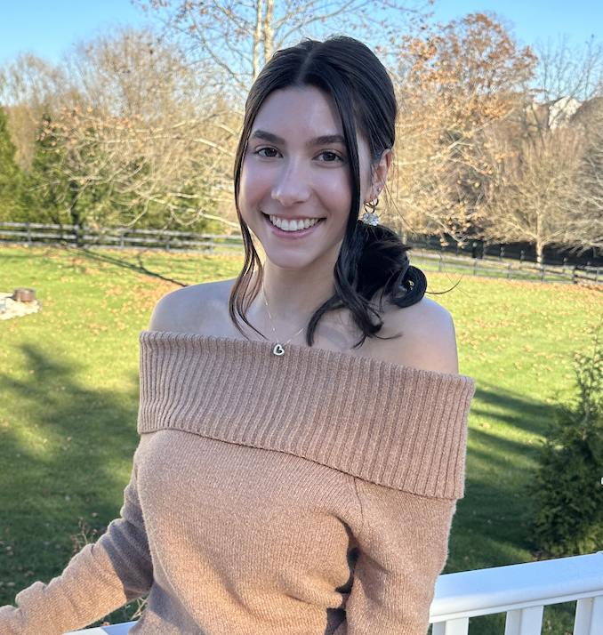

Mattie Heflin

Contact:
hefli2mr@dukes.jmu.edu
(540) 229-5880
Warrenton, VA
Education:
James Madison University (graduating May 2026)
B.S. in Communication Studies, major in Media Arts & Design
Creative Advertising Concentration
General Business Minor
Cumulative GPA: 3.742, Dean's List Fall 2022 & Fall 2023
Kettle Run High School (graduated May 2022)
Nokesville, VA
Work Experience:
Effee's Frozen Favorites (New Baltimore, VA)
Ice Cream Server (March 2019 - August 2023)
- Provided many forms of customer service
- Maintained store cleanliness and appearance
- Assisted in food preparation and storage
- Operated cash register
- Maintained customer satisfaction
Activities & Leadership:
Sigma Kappa, Delta Rho, James Madison University
Vice President of Programming, Historian, Member (September 2022 - current)
- Organized composite photoshoot for all members
- Scheduled bid day photographer
- Served on the executive council
- Created the calendar for all members
- Identified guest facilitators for chapter programming
- Oversaw committee management
Relevant Course Work:
Foundations of Visual Communication
Fall 2023
- Focused on tools and techniques used to create graphic content for diverse media delivery systems using Adobe Software
Foundations of Audio-Visual Storytelling
Fall 2023
- Created and produced engaging stories/content utilizing a varied range of audiovisual communication/media tools and formations for distribution
Foundations of User Experience Design
Fall 2023
- Practiced aesthetically pleasing web and interactive design narratives using User Experience